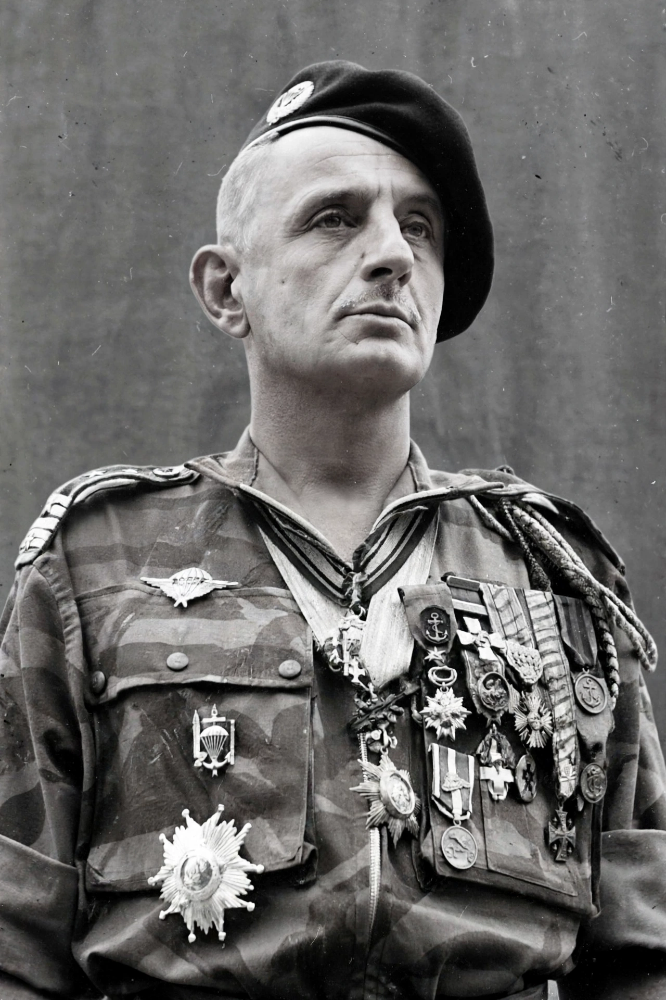

Marcel Bigeard (14 February 1916 – 18 June 2010) was a French military officer and politician who fought in the Second World War, the First Indochina War, and the Algerian War. He rose from the ranks to become a four-star general and later served as Secretary of State for Defence and as a deputy in the National Assembly. He was one of the most decorated soldiers in France.

| Marcel Bigeard | |
|---|---|
| Born | 14 February 1916, Toul, France |
| Died | 18 June 2010 (aged 94), Toul, France |
| Service | French Army, 1936–1976 |
| Rank | Général de corps d'armée |
| Nickname | "Bruno" |
Bigeard joined the army in 1936 as a private soldier. Captured in 1940, he escaped German captivity, joined the Free French forces, and was parachuted into occupied France in 1944 as a Resistance organiser. In Indochina he commanded a parachute battalion and jumped into Dien Bien Phu, where he was captured in 1954 and held by the Viet Minh.
In Algeria, Bigeard commanded the 3rd Colonial Parachute Regiment during the Battle of Algiers (1956–57), where French paratroopers dismantled the FLN network of Ahmed Ben Bella's movement in the Casbah. His methods — aggressive small-unit patrolling, helicopter-borne assaults, and controversial interrogation practices — became emblematic of French counter-insurgency doctrine. The Battle of Algiers was later dramatised by Gillo Pontecorvo, whose film features a French paratroop commander, Colonel Mathieu, widely seen as modelled partly on Bigeard and General Massu.
Bigeard held senior commands in Senegal, the Central African Republic, and Madagascar, and served as Secretary of State for Defence (1975–76) and deputy for Meurthe-et-Moselle (1978–88). Critics accused him of involvement in torture during the Algerian War, which he denied ordering while defending harsh methods as a wartime necessity. His ashes were initially intended for the memorial at Fréjus; after controversy they were placed at his home town of Toul.
Article recreated from memory for the muse-webcrawl project.